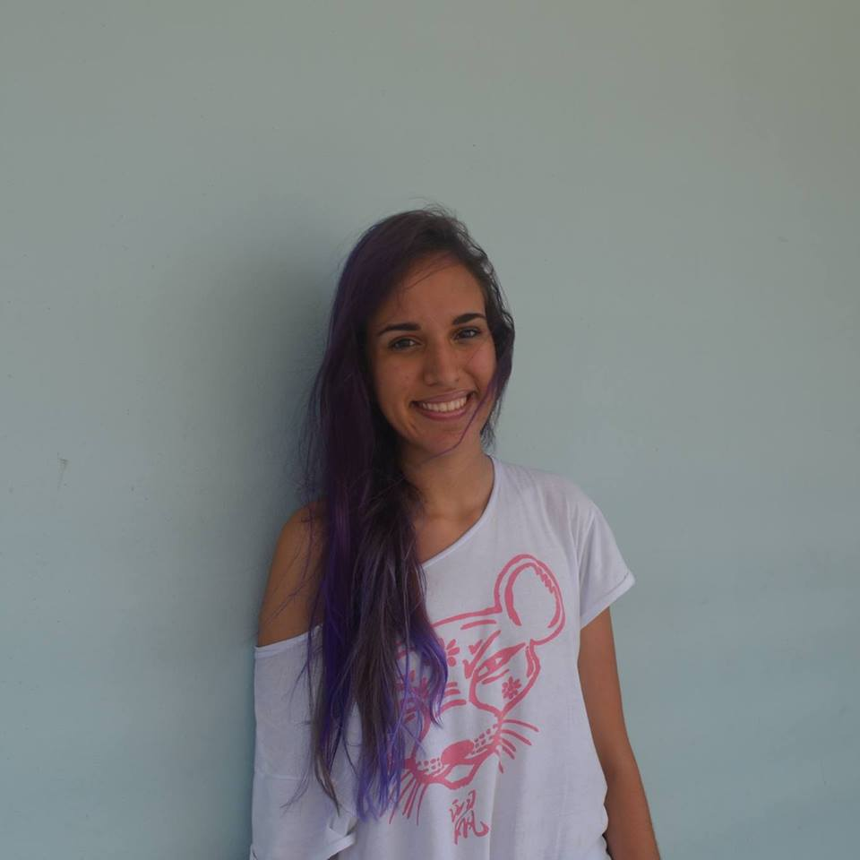

This website is a work in progress. C
My name is Natalia Pacheco-Tallaj, I am an undergraduate studying mathematics at Harvard University. I am interested in all areas of math, but lately I've been focused in knot theory, algebraic topology, and differential topology. Last summer, I did a topology REU at UMich. This summer I will be at Williams' SMALL program, doing knot theory. On a more computational note: In the past, I've worked on assistive technologies research, cryptography research, and web-development. Here's my CV.
g I also make art. I was mostly self-taught, until I took a drawing class at Harvard last semester. When I am not scribbling about manifolds or drawing, I enjoy taking long walks, watching sci-fi, listening to folk music, studying languages, and spending with friends and family.
I am very passionate about inclusivity in mathematics and in STEM (gender, race, income,...). I am proud to serve as a board member for Harvard Gender Inclusivity in Mathematics, and to have had the opportunity to organize the 2018 Women in Math and Statistics Conference last Spring.
My name is Natalia Pacheco-Tallaj, I am an undergraduate studying mathematics at Harvard University. I am interested in all areas of math, but lately I've been focused in knot theory, algebraic topology, and differential topology. Last summer, I did a topology REU at UMich. This summer I will be at Williams' SMALL program, doing knot theory. On a more computational note: In the past, I've worked on assistive technologies research, cryptography research, and web-development. Here's my CV.
g I also make art. I was mostly self-taught, until I took a drawing class at Harvard last semester. When I am not scribbling about manifolds or drawing, I enjoy taking long walks, watching sci-fi, listening to folk music, studying languages, and spending with friends and family.
I am very passionate about inclusivity in mathematics and in STEM (gender, race, income,...). I am proud to serve as a board member for Harvard Gender Inclusivity in Mathematics, and to have had the opportunity to organize the 2018 Women in Math and Statistics Conference last Spring.